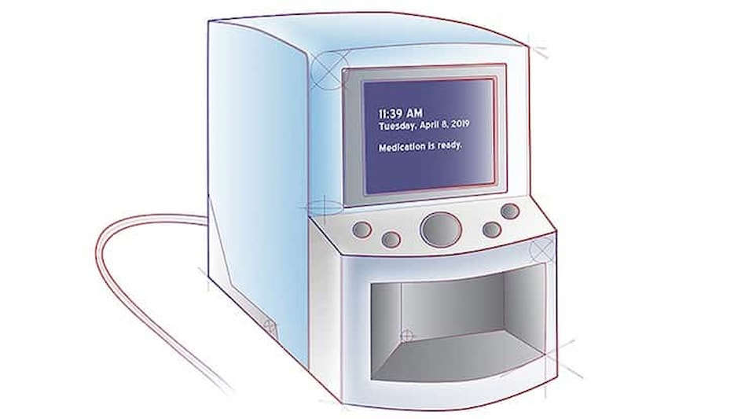
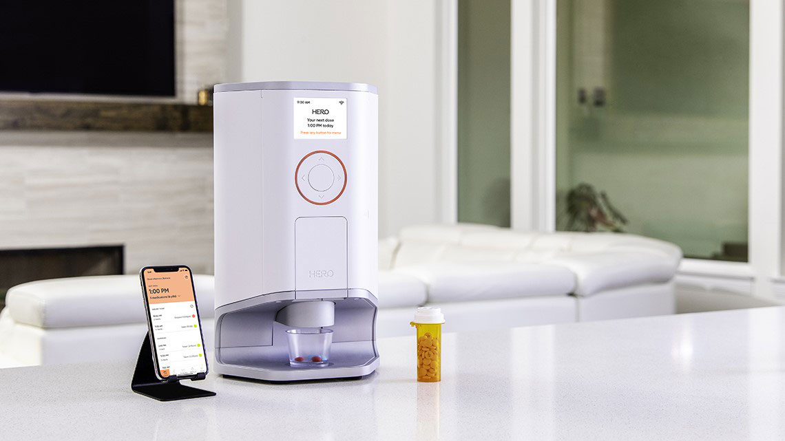
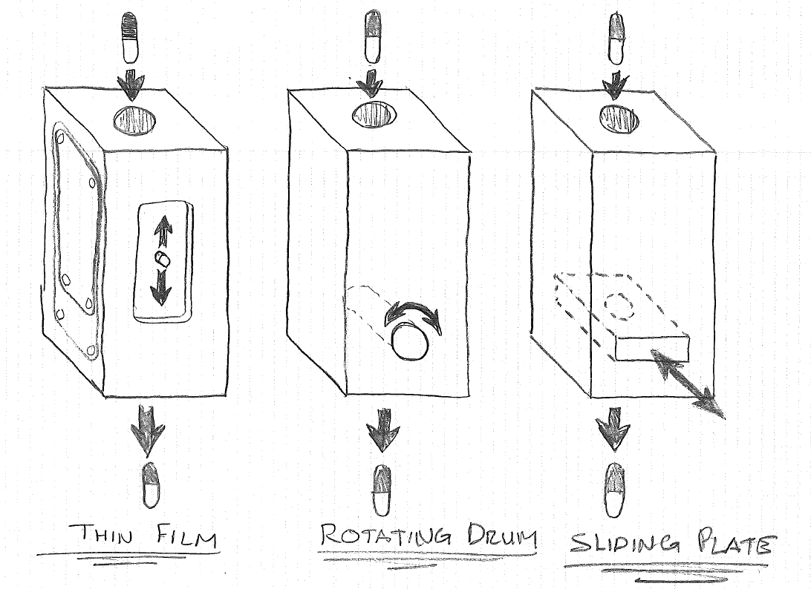

In today's fast-paced world, where healthcare and technology continually intersect, the quest for innovative solutions to age-old problems never ceases. One such challenge that has long plagued individuals and caregivers is medication management. Staying on top of a complex medication regimen can be a daunting task, leading to missed doses, errors, and potentially dire consequences. Enter the smart medicine dispenser, a remarkable piece of healthcare technology that promises to revolutionize the way we manage medications. Smart medicine dispensers are more than just sophisticated pill organizers; they are intelligent companions in our journey to optimal health. These ingenious devices offer a beacon of hope for those grappling with multiple medications, complex dosing schedules, or memory lapses. With programmable reminders, secure compartments, and advanced connectivity, smart medicine dispensers represent a leap forward in ensuring that patients receive their prescribed treatments on time and in the right dosage. This blog post delves into the world of smart medicine dispensers, exploring their features, benefits, and the profound impact they have on patients, caregivers, and the healthcare landscape as a whole. Join us on this journey as we uncover the future of medication management and how these remarkable devices are changing lives for the better.

A smart medicine dispenser, often referred to as an automatic pill dispenser or medication management system, is a technologically advanced device designed to assist individuals in managing their medications more effectively and safely. These devices are particularly beneficial for individuals who have complex medication regimens, are prone to forgetfulness, or need assistance with medication adherence. Here's a detailed explanation of what a smart medicine dispenser is and how it functions: **Key Features and Components:** 1. **Scheduled Dispensing:** Smart medicine dispensers allow users to pre-program medication schedules. They can dispense the right pills at the right time, ensuring that users take their medications as prescribed. 2. **Individual Compartments:** These devices typically have individual compartments or slots for each medication dose. This helps in organizing multiple medications for different times of the day. 3. **Alarms and Reminders:** Most smart medicine dispensers come with built-in alarms and reminders. These reminders can be visual, auditory, or even include text messages or phone call alerts, depending on the device's capabilities. 4. **Lockable and Secure:** Many smart medicine dispensers have locking mechanisms to prevent unauthorized access, which is particularly important for users with a history of overmedication or children in the household. 5. **Medication Tracking:** Some devices can track medication usage and provide data to the user or their healthcare provider. This can help in monitoring medication adherence and health outcomes. 6. **Remote Monitoring:** In some cases, these devices can be connected to the internet or a smartphone app, allowing caregivers or healthcare professionals to monitor medication adherence remotely.

1. **Loading Medications:** Users or caregivers load the smart medicine dispenser with the required medications. Each dose is placed in its designated compartment. 2. **Programming:** Users program the dispenser with the medication schedule, including dosing times and specific medications to dispense. This can often be done through a control panel on the device or via a smartphone app. 3. **Dispensing:** When it's time to take a dose, the smart medicine dispenser dispenses the medications from the designated compartments. The user is alerted through alarms or notifications. 4. **Secure Access:** Some dispensers require the user to interact with the device (e.g., pressing a button or scanning a barcode) to access the medication, ensuring that only the right person receives the dose. 5. **Monitoring and Reporting:** Many smart medicine dispensers record when medications are dispensed, providing a record of medication adherence. Some devices can share this information with healthcare providers or caregivers.

**Benefits of Smart Medicine Dispensers:** 1. **Improved Medication Adherence:** These devices significantly improve the likelihood of patients taking their medications as prescribed, leading to better health outcomes. 2. **Reduced Medication Errors:** By automating the dispensing process, the risk of medication errors, such as taking the wrong dose or missing a dose, is greatly reduced. 3. **Enhanced Independence:** Smart medicine dispensers empower individuals to manage their medications independently, even if they have cognitive impairments or mobility issues. 4. **Peace of Mind:** Caregivers and family members gain peace of mind knowing that their loved ones are taking their medications correctly. 5. **Remote Monitoring:** Some devices offer remote monitoring, allowing healthcare providers or family members to check on medication adherence and respond to any issues in real time. Smart medicine dispensers are a prime example of how technology can improve healthcare outcomes and the quality of life for individuals managing chronic conditions or complex medication regimens. These devices play a pivotal role in ensuring that patients receive the right medications, at the right time, and in the right doses, all while providing convenience and peace of mind.